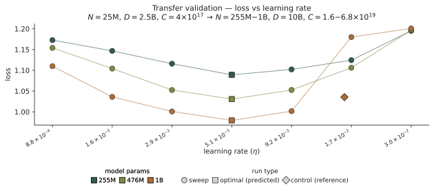
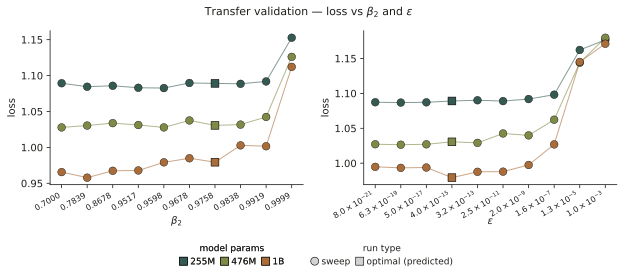
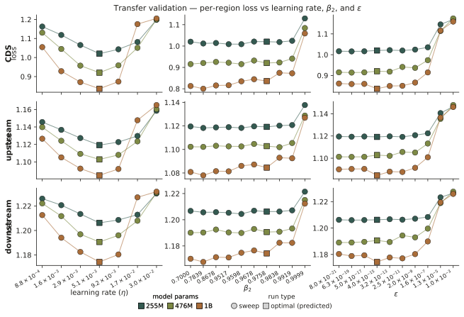
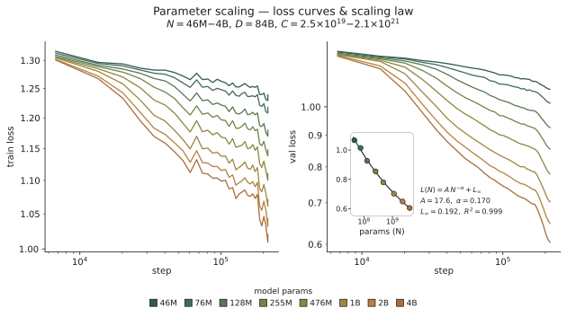
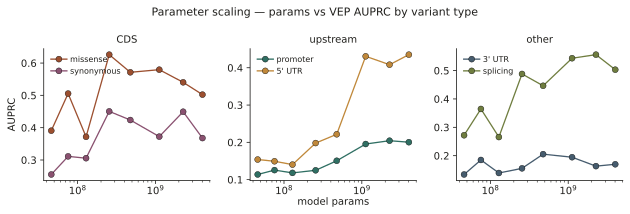
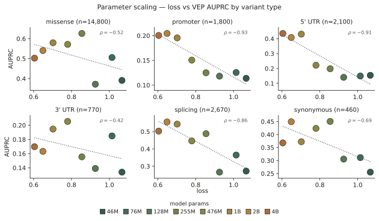
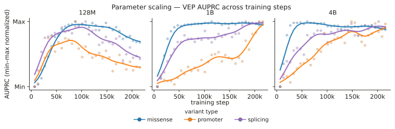
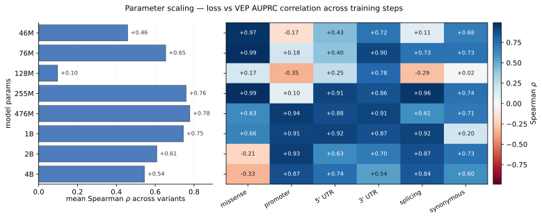
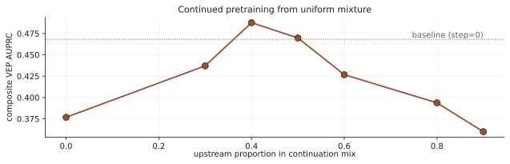
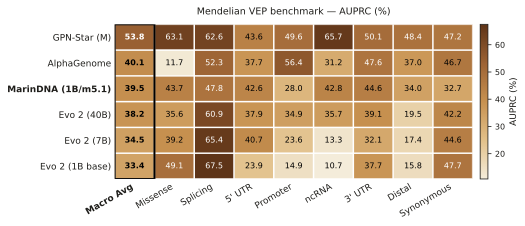

Draft — this post tracks docs/outline.md and embeds the current figures. Prose is intentionally skeletal pending a full write-up.
How Marin can be used to train single-sequence, vanilla Transformer gLMs comparable to Evo 2 40B with ~1,980× fewer FLOPs. Covers hyperparameter transfer, scaling-law, and training-mixture experiments.
Introduction
TBD.
Hyperparameter Transfer
- Cite the Delphi post.
- Proportional data mix: spans 3 genomic regions (CDS, upstream, downstream) — ~331M training examples / ~85B tokens from 366,411 RefSeq accessions across ~500 species.
- Reference Vizier sweep: ~25M params, 2.5B tokens, 16k batch (~4e17 FLOPs/run).
- Transfer validation: 10B tokens, 4k batch (~6.8e19 FLOPs/run); 76 runs across the 255M / 476M / 1B scales (~2.9e21 FLOPs total).


- LR is far more sensitive than β₂ or ε.
- This matters when running experiments without re-scaling LR to the token horizon.

Parameter Scaling

- Loss scaling is smooth and fits standard Kaplan laws well.
Downstream Performance

- As expected, parameter scaling yields monotonic improvements.

- The loss correlation is weak.

- Notably, VEP performance degrades at the largest model scales with more tokens.

- However, VEP performance scales more monotonically within a range of model sizes.
Mixture Experiments
- 1B is on the upper end of model scales with higher VEP monotonicity.
- We continue pretraining on more tokens at that scale with different mixtures.
- These experiments rely on hyperparameter transfer to new token horizons.
- Beginning with a checkpoint trained on a uniform mixture, we test shifts in mixture weight to compensate for gaps in specific VEP tasks.
- We focus on improving promoter and 5' UTR performance by shifting weights to upstream sequences.

- Improvements from deviating off of uniform mixtures are minimal.
- For this reason, we continue pretraining on animal data while preparing mammalian enhancer data.
- Training continues to ~104B tokens before mixing in new data.
- After ~62B tokens, performance improves drastically on distal tasks.
Conclusion

- Our net result is a PoC for a 1B model on par with Evo 2 40B after training on just 1.8% as many tokens (166B vs 9.3T) and ~0.05% as many FLOPs (1.1e21 vs 2.25e24).
- This model resulted from a messy, ad-hoc process aided in unanticipated ways by the hyperparameter-transfer, scaling, and mixture tools within Marin.
- Many less successful attempts are not mentioned here but are documented at Open-Athena/marin-dna.
- Ongoing work will hopefully yield a more consistent, effective training strategy.
Cite this post
@misc{todo2026_genomic_lm_optimization,
author = {TODO},
title = {Genomic Language Model Optimization},
year = {2026},
month = {jun},
howpublished = {\url{https://www.openathena.ai/blog/genomic-lm-optimization/}},
note = {Open Athena Blog}
}